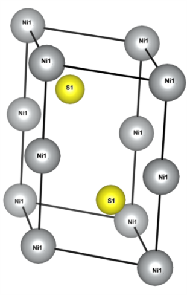

NiS¶
Crystal structure of NiS (drawn by VESTA).
{kind=link}
SCF calculation of Quantum ESPRESSO¶
&CONTROL
calculation = 'scf',
pseudo_dir = './',
prefix = 'nis' ,
outdir = './'
/
&SYSTEM
ibrav = 4,
celldm(1) = 6.5158
celldm(3) = 1.5542
nat = 4,
ntyp = 2,
ecutwfc = 45.0 ,
ecutrho = 360.0 ,
occupations = 'tetrahedra_opt',
/
&ELECTRONS
/
ATOMIC_SPECIES
Ni 58.6934 Ni.pbe-n-kjpaw_psl.0.1.upf
S 32.066 S.pbe-n-kjpaw_psl.0.1.upf
ATOMIC_POSITIONS crystal
Ni 0.000000000 0.000000000 0.000000000
Ni 0.000000000 0.000000000 0.500000000
S 0.333333333 0.666666667 0.250000000
S 0.666666667 0.333333333 0.750000000
K_POINTS automatic
8 8 6 0 0 0
The pseudopotentials are downloaded from Ni.pbe-n-kjpaw_psl.0.1.upf and S.pbe-n-kjpaw_psl.0.1.upf.
$ mpirun -np 4 pw.x -in scf_nis.in
Wannierization¶
Generate Bloch orbitals for the Wannier¶
Perform non-scf calculation for generating Bloch orbitals that are used in the wannierization.
&CONTROL
calculation = 'bands',
pseudo_dir = './',
prefix = 'nis' ,
outdir = './'
/
&SYSTEM
nbnd = 30
ibrav = 4,
celldm(1) = 6.5158
celldm(3) = 1.5542
nat = 4,
ntyp = 2,
ecutwfc = 45.0 ,
ecutrho = 360.0 ,
occupations = 'tetrahedra_opt',
/
&ELECTRONS
/
ATOMIC_SPECIES
Ni 58.6934 Ni.pbe-n-kjpaw_psl.0.1.upf
S 32.066 S.pbe-n-kjpaw_psl.0.1.upf
ATOMIC_POSITIONS crystal
Ni 0.000000000 0.000000000 0.000000000
Ni 0.000000000 0.000000000 0.500000000
S 0.333333333 0.666666667 0.250000000
S 0.666666667 0.333333333 0.750000000
K_POINTS crystal
64
0.00000000 0.00000000 0.00000000 1.562500e-02
0.00000000 0.00000000 0.25000000 1.562500e-02
0.00000000 0.00000000 0.50000000 1.562500e-02
0.00000000 0.00000000 0.75000000 1.562500e-02
0.00000000 0.25000000 0.00000000 1.562500e-02
0.00000000 0.25000000 0.25000000 1.562500e-02
0.00000000 0.25000000 0.50000000 1.562500e-02
0.00000000 0.25000000 0.75000000 1.562500e-02
0.00000000 0.50000000 0.00000000 1.562500e-02
0.00000000 0.50000000 0.25000000 1.562500e-02
0.00000000 0.50000000 0.50000000 1.562500e-02
0.00000000 0.50000000 0.75000000 1.562500e-02
0.00000000 0.75000000 0.00000000 1.562500e-02
0.00000000 0.75000000 0.25000000 1.562500e-02
0.00000000 0.75000000 0.50000000 1.562500e-02
0.00000000 0.75000000 0.75000000 1.562500e-02
0.25000000 0.00000000 0.00000000 1.562500e-02
0.25000000 0.00000000 0.25000000 1.562500e-02
0.25000000 0.00000000 0.50000000 1.562500e-02
0.25000000 0.00000000 0.75000000 1.562500e-02
0.25000000 0.25000000 0.00000000 1.562500e-02
0.25000000 0.25000000 0.25000000 1.562500e-02
0.25000000 0.25000000 0.50000000 1.562500e-02
0.25000000 0.25000000 0.75000000 1.562500e-02
0.25000000 0.50000000 0.00000000 1.562500e-02
0.25000000 0.50000000 0.25000000 1.562500e-02
0.25000000 0.50000000 0.50000000 1.562500e-02
0.25000000 0.50000000 0.75000000 1.562500e-02
0.25000000 0.75000000 0.00000000 1.562500e-02
0.25000000 0.75000000 0.25000000 1.562500e-02
0.25000000 0.75000000 0.50000000 1.562500e-02
0.25000000 0.75000000 0.75000000 1.562500e-02
0.50000000 0.00000000 0.00000000 1.562500e-02
0.50000000 0.00000000 0.25000000 1.562500e-02
0.50000000 0.00000000 0.50000000 1.562500e-02
0.50000000 0.00000000 0.75000000 1.562500e-02
0.50000000 0.25000000 0.00000000 1.562500e-02
0.50000000 0.25000000 0.25000000 1.562500e-02
0.50000000 0.25000000 0.50000000 1.562500e-02
0.50000000 0.25000000 0.75000000 1.562500e-02
0.50000000 0.50000000 0.00000000 1.562500e-02
0.50000000 0.50000000 0.25000000 1.562500e-02
0.50000000 0.50000000 0.50000000 1.562500e-02
0.50000000 0.50000000 0.75000000 1.562500e-02
0.50000000 0.75000000 0.00000000 1.562500e-02
0.50000000 0.75000000 0.25000000 1.562500e-02
0.50000000 0.75000000 0.50000000 1.562500e-02
0.50000000 0.75000000 0.75000000 1.562500e-02
0.75000000 0.00000000 0.00000000 1.562500e-02
0.75000000 0.00000000 0.25000000 1.562500e-02
0.75000000 0.00000000 0.50000000 1.562500e-02
0.75000000 0.00000000 0.75000000 1.562500e-02
0.75000000 0.25000000 0.00000000 1.562500e-02
0.75000000 0.25000000 0.25000000 1.562500e-02
0.75000000 0.25000000 0.50000000 1.562500e-02
0.75000000 0.25000000 0.75000000 1.562500e-02
0.75000000 0.50000000 0.00000000 1.562500e-02
0.75000000 0.50000000 0.25000000 1.562500e-02
0.75000000 0.50000000 0.50000000 1.562500e-02
0.75000000 0.50000000 0.75000000 1.562500e-02
0.75000000 0.75000000 0.00000000 1.562500e-02
0.75000000 0.75000000 0.25000000 1.562500e-02
0.75000000 0.75000000 0.50000000 1.562500e-02
0.75000000 0.75000000 0.75000000 1.562500e-02
This k-grid is generated as follows:
$ kmesh.pl 4 4 4
where kmesh.pl is located in the utility/ directory of Wannier90.
Then, run pw.x as
$ mpirun -np 4 pw.x -in nscf_nis.in
Preprocess for Wannier90¶
Pre-process with wannier90 program. It is always required before pw2wannier.x runs.
num_bands = 30
num_wann = 16
dis_win_max = 13.0
dis_win_min = 2.0
!dis_froz_max = 13.0
!dis_froz_min = 2.0
begin projections
Ni:d
S:p
end projections
site_symmetry = .true.
write_hr = .true.
bands_plot = .true.
wannier_plot = .true.
wannier_plot_supercell = 1
!exclude_bands=
begin kpoint_path
G 0.0000000000 0.0000000000 0.00 M 0.5000000000 0.0000000000 0.00
M 0.5000000000 0.0000000000 0.00 K 0.3333333333 0.3333333333 0.00
K 0.3333333333 0.3333333333 0.00 G 0.0000000000 0.0000000000 0.00
G 0.0000000000 0.0000000000 0.00 A 0.0000000000 0.0000000000 0.50
A 0.0000000000 0.0000000000 0.50 L 0.5000000000 0.0000000000 0.50
L 0.5000000000 0.0000000000 0.50 H 0.3333333333 0.3333333333 0.50
H 0.3333333333 0.3333333333 0.50 A 0.0000000000 0.0000000000 0.50
end kpoint_path
begin unit_cell_cart
bohr
6.515800000000000E+000 0.000000000000000E+000 0.000000000000000E+000
-3.257900000000000E+000 5.642848325979045E+000 0.000000000000000E+000
0.000000000000000E+000 0.000000000000000E+000 1.012685636000000E+001
end unit_cell_cart
begin atoms_frac
Ni 0.000000000 0.000000000 0.000000000
Ni 0.000000000 0.000000000 0.500000000
S 0.333333333 0.666666667 0.250000000
S 0.666666667 0.333333333 0.750000000
end atoms_frac
mp_grid = 4 4 4
begin kpoints
0.00000000 0.00000000 0.00000000
0.00000000 0.00000000 0.25000000
0.00000000 0.00000000 0.50000000
0.00000000 0.00000000 0.75000000
0.00000000 0.25000000 0.00000000
0.00000000 0.25000000 0.25000000
0.00000000 0.25000000 0.50000000
0.00000000 0.25000000 0.75000000
0.00000000 0.50000000 0.00000000
0.00000000 0.50000000 0.25000000
0.00000000 0.50000000 0.50000000
0.00000000 0.50000000 0.75000000
0.00000000 0.75000000 0.00000000
0.00000000 0.75000000 0.25000000
0.00000000 0.75000000 0.50000000
0.00000000 0.75000000 0.75000000
0.25000000 0.00000000 0.00000000
0.25000000 0.00000000 0.25000000
0.25000000 0.00000000 0.50000000
0.25000000 0.00000000 0.75000000
0.25000000 0.25000000 0.00000000
0.25000000 0.25000000 0.25000000
0.25000000 0.25000000 0.50000000
0.25000000 0.25000000 0.75000000
0.25000000 0.50000000 0.00000000
0.25000000 0.50000000 0.25000000
0.25000000 0.50000000 0.50000000
0.25000000 0.50000000 0.75000000
0.25000000 0.75000000 0.00000000
0.25000000 0.75000000 0.25000000
0.25000000 0.75000000 0.50000000
0.25000000 0.75000000 0.75000000
0.50000000 0.00000000 0.00000000
0.50000000 0.00000000 0.25000000
0.50000000 0.00000000 0.50000000
0.50000000 0.00000000 0.75000000
0.50000000 0.25000000 0.00000000
0.50000000 0.25000000 0.25000000
0.50000000 0.25000000 0.50000000
0.50000000 0.25000000 0.75000000
0.50000000 0.50000000 0.00000000
0.50000000 0.50000000 0.25000000
0.50000000 0.50000000 0.50000000
0.50000000 0.50000000 0.75000000
0.50000000 0.75000000 0.00000000
0.50000000 0.75000000 0.25000000
0.50000000 0.75000000 0.50000000
0.50000000 0.75000000 0.75000000
0.75000000 0.00000000 0.00000000
0.75000000 0.00000000 0.25000000
0.75000000 0.00000000 0.50000000
0.75000000 0.00000000 0.75000000
0.75000000 0.25000000 0.00000000
0.75000000 0.25000000 0.25000000
0.75000000 0.25000000 0.50000000
0.75000000 0.25000000 0.75000000
0.75000000 0.50000000 0.00000000
0.75000000 0.50000000 0.25000000
0.75000000 0.50000000 0.50000000
0.75000000 0.50000000 0.75000000
0.75000000 0.75000000 0.00000000
0.75000000 0.75000000 0.25000000
0.75000000 0.75000000 0.50000000
0.75000000 0.75000000 0.75000000
end kpoints
This k grid is generated as follows:
$ kmesh.pl 4 4 4 wan
$ wannier90.x -pp nis
QE to wannier90 interface¶
&inputpp
outdir = './'
prefix = 'nis'
seedname = 'nis'
spin_component = 'none'
write_mmn = .true.
write_amn = .true.
write_unk = .true.
write_dmn = .true.
wan_mode = 'standalone'
/
$ mpirun -np 4 pw2wan.x -in pw2wan_nis.in
Wannier90¶
Execute wannier90.x for the actual wannierization.
The input file is the same as that for the preprocessing run.
$ wannier90 nis
(Optional) Check wannierization¶
If we want to check the quarity of the wannierization, we plot the original and the wannier-interpolated band structure simalteneously.
First, we compute the band structure with the following input file:
&CONTROL
calculation = 'bands',
pseudo_dir = './',
prefix = 'nis' ,
outdir = './'
/
&SYSTEM
nbnd = 30
ibrav = 4,
celldm(1) = 6.5158
celldm(3) = 1.5542
nat = 4,
ntyp = 2,
ecutwfc = 45.0 ,
ecutrho = 360.0 ,
occupations = 'tetrahedra_opt',
/
&ELECTRONS
/
ATOMIC_SPECIES
Ni 58.6934 Ni.pbe-n-kjpaw_psl.0.1.upf
S 32.066 S.pbe-n-kjpaw_psl.0.1.upf
ATOMIC_POSITIONS crystal
Ni 0.000000000 0.000000000 0.000000000
Ni 0.000000000 0.000000000 0.500000000
S 0.333333333 0.666666667 0.250000000
S 0.666666667 0.333333333 0.750000000
K_POINTS crystal
98
0.0000000000 0.0000000000 0.0000000000 1.0
0.0312500000 0.0000000000 0.0000000000 1.0
0.0625000000 0.0000000000 0.0000000000 1.0
0.0937500000 0.0000000000 0.0000000000 1.0
0.1250000000 0.0000000000 0.0000000000 1.0
0.1562500000 0.0000000000 0.0000000000 1.0
0.1875000000 0.0000000000 0.0000000000 1.0
0.2187500000 0.0000000000 0.0000000000 1.0
0.2500000000 0.0000000000 0.0000000000 1.0
0.2812500000 0.0000000000 0.0000000000 1.0
0.3125000000 0.0000000000 0.0000000000 1.0
0.3437500000 0.0000000000 0.0000000000 1.0
0.3750000000 0.0000000000 0.0000000000 1.0
0.4062500000 0.0000000000 0.0000000000 1.0
0.4375000000 0.0000000000 0.0000000000 1.0
0.4687500000 0.0000000000 0.0000000000 1.0
0.5000000000 0.0000000000 0.0000000000 1.0
0.4814811111 0.0370366667 0.0000000000 1.0
0.4629622222 0.0740733333 0.0000000000 1.0
0.4444433333 0.1111100000 0.0000000000 1.0
0.4259244444 0.1481466667 0.0000000000 1.0
0.4074055556 0.1851833333 0.0000000000 1.0
0.3888866667 0.2222200000 0.0000000000 1.0
0.3703677778 0.2592566667 0.0000000000 1.0
0.3518488889 0.2962933333 0.0000000000 1.0
0.3333300000 0.3333300000 0.0000000000 1.0
0.3157863158 0.3157863158 0.0000000000 1.0
0.2982426316 0.2982426316 0.0000000000 1.0
0.2806989474 0.2806989474 0.0000000000 1.0
0.2631552632 0.2631552632 0.0000000000 1.0
0.2456115789 0.2456115789 0.0000000000 1.0
0.2280678947 0.2280678947 0.0000000000 1.0
0.2105242105 0.2105242105 0.0000000000 1.0
0.1929805263 0.1929805263 0.0000000000 1.0
0.1754368421 0.1754368421 0.0000000000 1.0
0.1578931579 0.1578931579 0.0000000000 1.0
0.1403494737 0.1403494737 0.0000000000 1.0
0.1228057895 0.1228057895 0.0000000000 1.0
0.1052621053 0.1052621053 0.0000000000 1.0
0.0877184211 0.0877184211 0.0000000000 1.0
0.0701747368 0.0701747368 0.0000000000 1.0
0.0526310526 0.0526310526 0.0000000000 1.0
0.0350873684 0.0350873684 0.0000000000 1.0
0.0175436842 0.0175436842 0.0000000000 1.0
0.0000000000 0.0000000000 0.0000000000 1.0
0.0000000000 0.0000000000 0.0555555556 1.0
0.0000000000 0.0000000000 0.1111111111 1.0
0.0000000000 0.0000000000 0.1666666667 1.0
0.0000000000 0.0000000000 0.2222222222 1.0
0.0000000000 0.0000000000 0.2777777778 1.0
0.0000000000 0.0000000000 0.3333333333 1.0
0.0000000000 0.0000000000 0.3888888889 1.0
0.0000000000 0.0000000000 0.4444444444 1.0
0.0000000000 0.0000000000 0.5000000000 1.0
0.0312500000 0.0000000000 0.5000000000 1.0
0.0625000000 0.0000000000 0.5000000000 1.0
0.0937500000 0.0000000000 0.5000000000 1.0
0.1250000000 0.0000000000 0.5000000000 1.0
0.1562500000 0.0000000000 0.5000000000 1.0
0.1875000000 0.0000000000 0.5000000000 1.0
0.2187500000 0.0000000000 0.5000000000 1.0
0.2500000000 0.0000000000 0.5000000000 1.0
0.2812500000 0.0000000000 0.5000000000 1.0
0.3125000000 0.0000000000 0.5000000000 1.0
0.3437500000 0.0000000000 0.5000000000 1.0
0.3750000000 0.0000000000 0.5000000000 1.0
0.4062500000 0.0000000000 0.5000000000 1.0
0.4375000000 0.0000000000 0.5000000000 1.0
0.4687500000 0.0000000000 0.5000000000 1.0
0.5000000000 0.0000000000 0.5000000000 1.0
0.4814811111 0.0370366667 0.5000000000 1.0
0.4629622222 0.0740733333 0.5000000000 1.0
0.4444433333 0.1111100000 0.5000000000 1.0
0.4259244444 0.1481466667 0.5000000000 1.0
0.4074055556 0.1851833333 0.5000000000 1.0
0.3888866667 0.2222200000 0.5000000000 1.0
0.3703677778 0.2592566667 0.5000000000 1.0
0.3518488889 0.2962933333 0.5000000000 1.0
0.3333300000 0.3333300000 0.5000000000 1.0
0.3157863158 0.3157863158 0.5000000000 1.0
0.2982426316 0.2982426316 0.5000000000 1.0
0.2806989474 0.2806989474 0.5000000000 1.0
0.2631552632 0.2631552632 0.5000000000 1.0
0.2456115789 0.2456115789 0.5000000000 1.0
0.2280678947 0.2280678947 0.5000000000 1.0
0.2105242105 0.2105242105 0.5000000000 1.0
0.1929805263 0.1929805263 0.5000000000 1.0
0.1754368421 0.1754368421 0.5000000000 1.0
0.1578931579 0.1578931579 0.5000000000 1.0
0.1403494737 0.1403494737 0.5000000000 1.0
0.1228057895 0.1228057895 0.5000000000 1.0
0.1052621053 0.1052621053 0.5000000000 1.0
0.0877184211 0.0877184211 0.5000000000 1.0
0.0701747368 0.0701747368 0.5000000000 1.0
0.0526310526 0.0526310526 0.5000000000 1.0
0.0350873684 0.0350873684 0.5000000000 1.0
0.0175436842 0.0175436842 0.5000000000 1.0
0.0000000000 0.0000000000 0.5000000000 1.0
$ mpiexec -np 4 pw.x -in band_nis.in
&BANDS
prefix = "nis",
outdir = "./",
!filband = "band.dat"
!lsym = .true.
/
$ mpiexec -np 4 bands.x -in bands_nis.in
plot [][3:13] "bands.out.gnu" u 1:2 w p tit "Orig", 10.913 tit "E_F", "nis_band.dat" u ($1*0.549):2 tit "Wannier" w l

DMFT calculation¶
[model]
U = 1.0
J = 0.0
lattice = wannier90
seedname = nis
nelec = 24.0
ncor = 2
cshell = [(2, 5),(2, 5)]
bvec=[(1.822263, 1.052084, 0.0),(0.0, 2.104168, 0.0),(0.0, 0.0, 1.172476)]
[system]
nk0 = 4
nk1 = 4
nk2 = 4
beta = 10.0
[impurity_solver]
name = TRIQS/hubbard-I
[control]
max_step = 10
[tool]
broadening = 0.1
nk_line = 50
nnode = 8
knode=[(G,0.0,0.0,0.0),(M,0.5,0.0,0.0),(K,0.3333333333,0.3333333333,0.0),(G,0.0,0.0,0.0),(A,0.0,0.0,0.5),(L,0.5,0.0,0.5),(H,0.3333333333,0.3333333333,0.5),(A,0.0,0.0,0.5)]
omega_max =3.0
omega_min =-12.0
Nomega = 500
DMFT setup: dcore_pre¶
$ pydmf_pre nis.ini
Running self-consistent DFT+DMFT : dcore¶
$ pydmf nis.ini
Post-processing and data analysis: dcore_post¶
$ pydmf_post nis.ini
$ gnuplot nis_akw.gp

“+” indicates the original band structure.